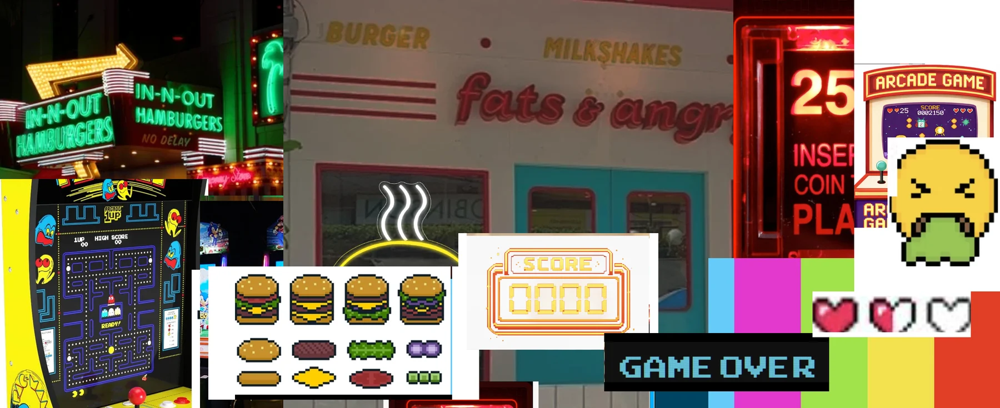
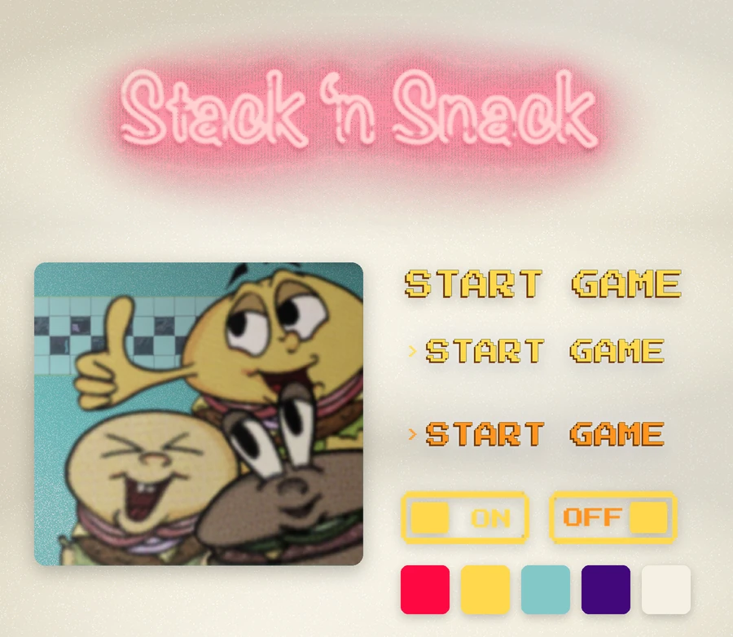
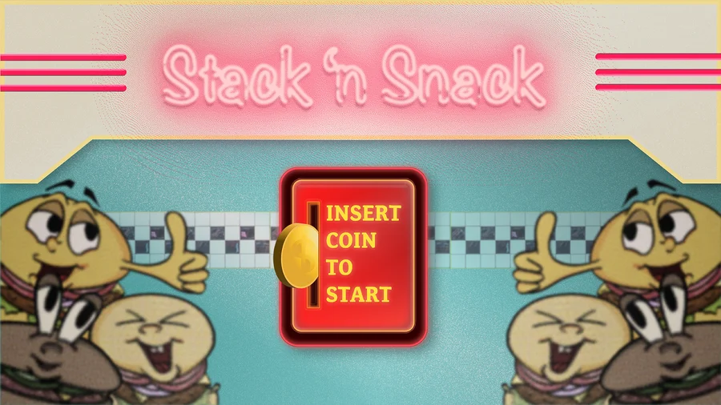
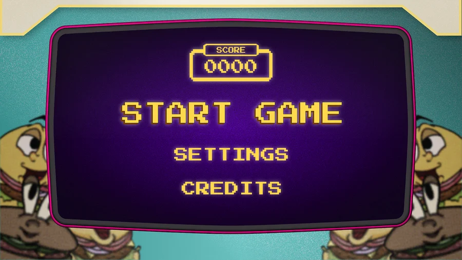
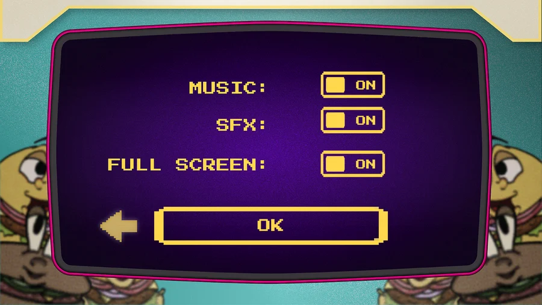

Concept · Game art · Interface design
An arcade burger game, and the three screens you meet before you play it.
Design the three screens you meet before you play: splash, menu and settings. The player was given to me, someone who wants a nostalgic, simple game, nothing complicated, the kind you pick up for five minutes and put down again. The game itself was mine to invent, so I made it about stacking burgers and pushed the styling as far back toward old-school arcade as I could.
Old arcade machines, and the burger places that used to sit next to them. Pac-Man cabinets, In-N-Out neon, pixel sprites, a 25¢ insert-coin plate, score panels and pixel hearts. The checkerboard tile, the chrome and the hot pink all come straight off these boards.

Everything is picked to feel like a machine in a diner. The sign is neon because that is what hangs over the counter, the type is a pixel font because that is all an old cabinet could draw, and the burgers are hand drawn so the game has a face instead of a logo.



